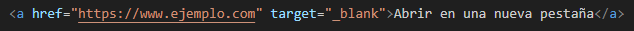
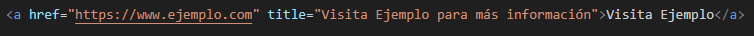
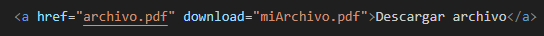
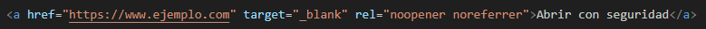
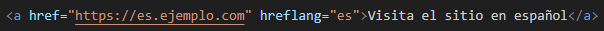
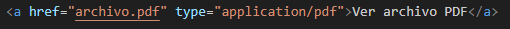
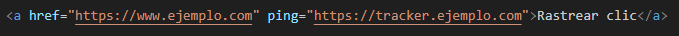
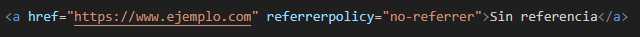

¿Para que es utilizado?
El elemento <a> en HTML es utilizado para crear enlaces, permitiendo a los usuarios navegar entre diferentes páginas o recursos, como archivos, secciones dentro de la misma página o direcciones de correo electrónico. Los enlaces pueden contener texto o imágenes y suelen ser interactivos, cambiando de apariencia cuando el usuario pasa el cursor sobre ellos. El atributo más común del <a> es href, que define el destino del enlace. Otros atributos, como target, title y download, agregan funcionalidades adicionales, como abrir el enlace en una nueva pestaña, mostrar un texto emergente o descargar archivos. En resumen, el <a> es una herramienta versátil y fundamental para la navegación en la web. A continuacion mostraremos ejemplos de su uso con distintos atributos:
href
El atributo href es el más importante, ya que define el destino del enlace.

target
El atributo target especifica dónde se abrirá el enlace. Puede ser en la misma pestaña o en una nueva pestaña.
title
El atributo title proporciona un texto que aparece cuando el usuario pasa el ratón sobre el enlace.
download
El atributo download permite que un enlace descargue un archivo en lugar de abrirlo.
rel
El atributo rel describe la relación entre el documento actual y el enlace. Se usa comúnmente con target="_blank" para mejorar la seguridad.
hreflang
El atributo hreflang indica el idioma del contenido del enlace. Es útil para motores de búsqueda.
type
El atributo type define el tipo de contenido del recurso vinculado. Es útil cuando enlazas a recursos multimedia o documentos.
ping
El atributo ping envía una solicitud cuando se hace clic en el enlace para rastrear la actividad del usuario. Se utiliza mayormente en análisis.
referrerpolicy
El atributo referrerpolicy controla cuánta información de referencia se envía al hacer clic en el enlace.
